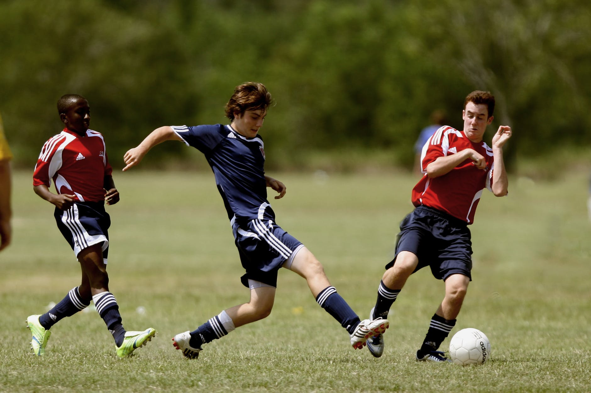

-

soccer
score
The aim of soccer is to score more goals then your opponent in a 90 minute playing time frame. The match is split up into two halves of 45 minutes. After the first 45 minutes players will take a 15 minute rest period called half time. The second 45 minutes will resume and any time deemed fit to be added on by the referee (injury time) will be accordingly.
-
basketball
dribble
Basketball is a team sport. Two teams of five players each try to score by shooting a ball through a hoop elevated 10 feet above the ground. The game is played on a rectangular floor called the court, and there is a hoop at each end. The court is divided into two main sections by the mid-court line. If the offensive team puts the ball into play behind the mid-court line, it has ten seconds to get the ball over the mid-court line. If it doesn't, then the defense gets the ball. Once the offensive team gets the ball over the mid-court line, it can no longer have possession of the ball in the area behind the midcourt line. If it does, the defense is awarded the ball.
-
baseball
throw
Baseball is a sport that dates back as far as 1744 and formats of the game have been in place until the modern era today. The game is predominantly big in North America, Canada and Japan. The game is played worldwide with the pinnacle of sport coming from the World Series of Baseball. Ironically, this event is only competed by North American teams.
-
swimming
freestyle
Olympic swimming uses four basic swimming styles or strokes. Freestyle, backstroke, breaststroke, and butterfly (or all four within one race—that is called the IM or individual medley).There are 16 swimming pool events for men and women swimmers in the modern Olympic Games. In 2008 an open water, 10-kilometer marathon swimming race was added to the Olympic Swimming program.
-
football
catch
American Football is one of the biggest North American sports. Whilst the game is played worldwide, the professional leagues in North America (such as the NFL) easily attract the best players in the world making its leagues the most competitive. The pinnacle of the sport comes in the form of the Super Bowl played out every year to millions of people around the world.
-
karate
punch
Karate, unlike Japanese Judo is primarily a striking art and involves the use of punches, kicks, knee and elbow strikes and various other striking techniques. Some forms of karate may also include a small amount of throws, joint locks and grappling, though it is as an exciting striking art that Karate is known.